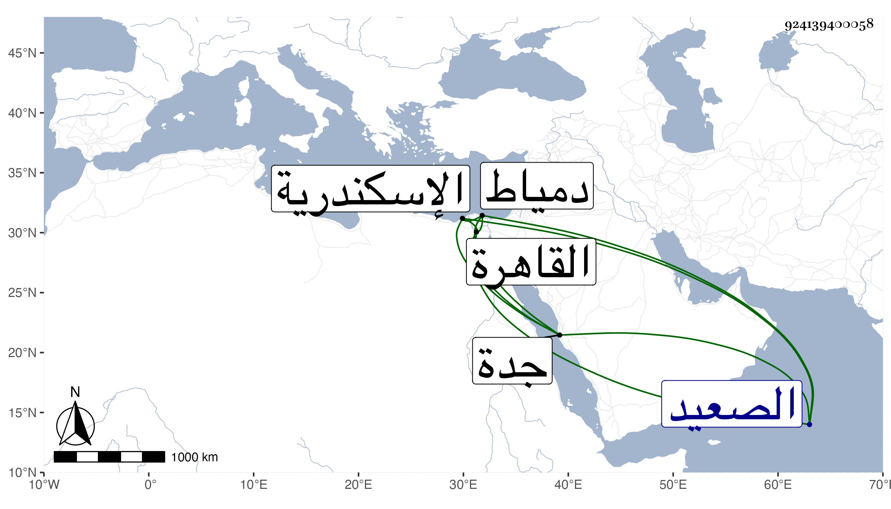

0902Sakhawi.DawLamic.ITO20230111-ara1.EIS1600.924139400058
Biography ID: 924139400058
381
أحمد بن محمد بن عبد الله بن حسن بن يوسف بن هارون بن فرحون هكذا أملاه علي مع اختلاف فيمن بعد حسن فقيل فرحون بن عبد الحميد ابن رحمة وقيل غير ذلك ولي الدين أبو حاتم بن القطب القرشي المهلبي البهنسي القاهري الشافعي الآتي أبوه وأخوه عبد الله . ولد في ثاني عشر ربيع الأول سنة ثمان وسبعين وسبعمائة بالقاهرة ونشأ بها فسمع على المطرزي والغماري والتنوخي والأبناسي وابن الشيخة والعراقي والجوهري في آخرين منهم أبوه حسبما كان يقوله ، وحفظ القرآن والعمدة والتنبيه وعرضهما على البلقيني وابن الملقن والعراقي والأبناسي وجماعة ، وحج غير مرة أولاها في سنة ست وتسعين وجاور وتلا لأبي عمرو إلى الأنعام على بعض القراء وبحث على عبد الوهاب بن اليافعي من أول التنبيه إلى التفليس وعلى البدر حسن الزمزمي في الفرائض وجميع المرشدة في الحساب لابن الهائم وقال أنه سمع حينئذ على الفقيه علي النويري والشمس بن سكر واشتغل كثيرا ثم ترك وجاور أيضا في سنة اثنتين وعشرين وأنه سمع بالقلعة على ابن أبي المجد في سنة تسع وتسعين وأن الشمس ابن الصالحي سأله في النيابة عنه وأمانة المودع فأبى تعففا ، وكان معظما عند الخلفاء العباسيين معروفا بصحبتهم وله تردد إلى الأكابر وأثرى بعد أخيه المشار إليه وتعانى التجارة وكثرت أسفاره بسببها وطوف بلاد الصعيد ودخل الاسكندرية ودمياط وصار من رجال العالم ، ورأيته يذاكر في مجلس شيخنا بأسماء البلدان وأحوالهم وتراجم أهلها مذاكرة حسنة يربى فيها على غيره قرأت عليه يسيرا ، ومات في شعبان سنة أربع وخمسين بجدة ودفن بها على ما بلغني وخلف مالا جزيلا رحمه الله وعفا عنه وإيانا .
